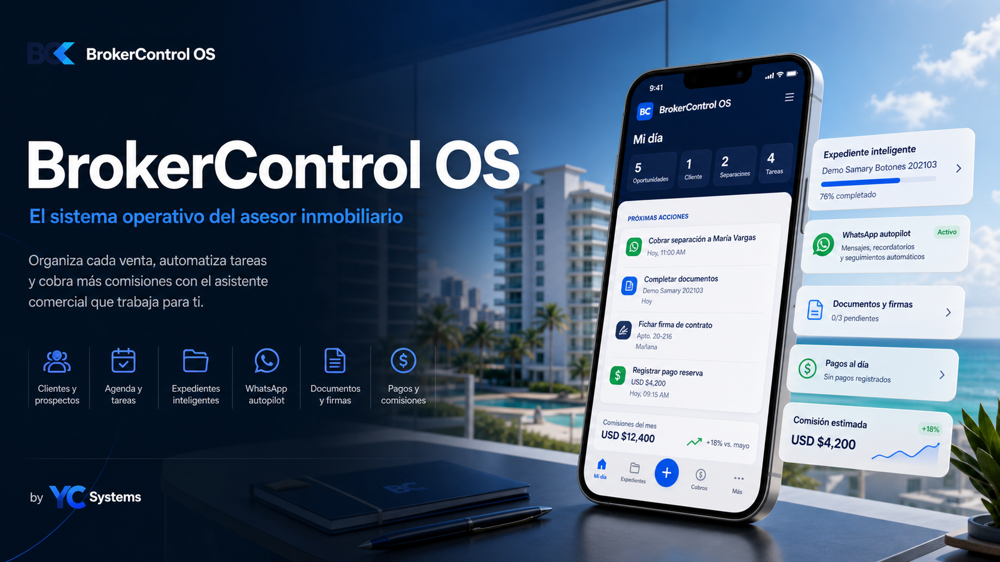

YC Systems / Sistemas operativos
CRM inmobiliario
BrokerControl
A real estate CRM that controls the full commercial flow from lead to signed contract. Un CRM inmobiliario que controla el flujo comercial completo desde prospecto hasta contrato firmado.

Producto propio
Un CRM vertical para operaciones inmobiliarias que necesitan control
BrokerControl posiciona a YC Systems en un mercado claro: equipos inmobiliarios que necesitan ordenar prospectos, reservas, documentos, pagos y comisiones.
Qué resuelve
Reduce seguimiento manual y permite ver cada cliente desde prospecto hasta cierre, con documentos y pagos organizados.
Qué incluye
Dashboard, pipeline, clientes, reservas, planes de pago, comisiones, tareas, reportes y control de estado.
Quién lo compra
Brokers, inmobiliarias, salas de ventas y proyectos que necesitan un sistema interno propio.
Siguiente fase
Roles, firmas, plantillas, notificaciones, integraciones contables, portal de cliente y mantenimiento.
Un cliente similar puede contratar un CRM inmobiliario adaptado a su flujo real.
Quiero un CRM como este